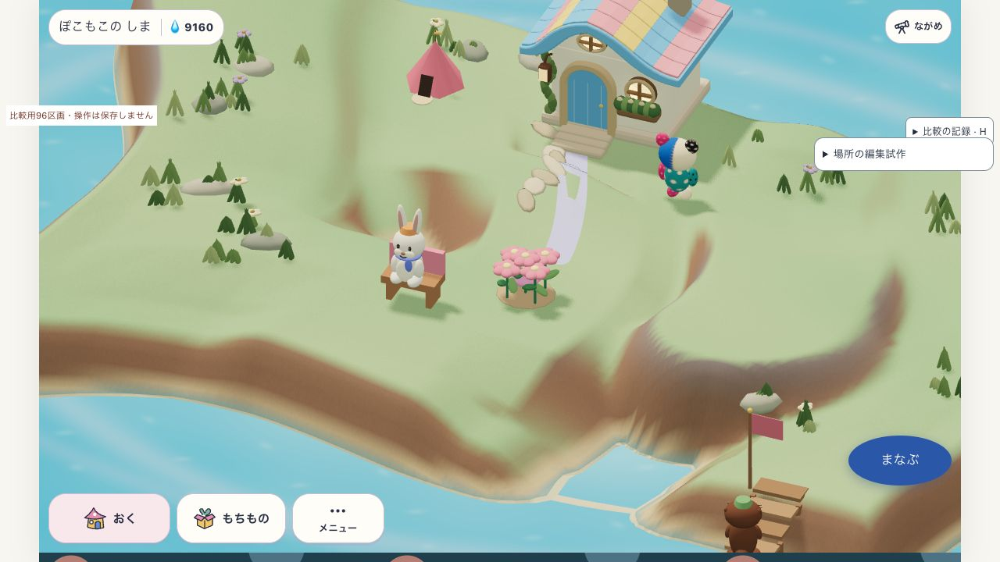

SANSU / 2026.10.23 / PLACE OUTLINE v4
高低差から、登れる坂をつくる。
限定試作・部分成立 / 製品未採用
前回の高台の経路不成立を改善。周囲の高さから坂の長さを決め、共有の床と歩行経路をつないだ。高台へベンチを移動し、住人の着席を実画面で観察した。
変更前
高台
入り江・広い入口
入り江・狭い入口

v4高台。高低差から坂の長さを決め、北側の地面へつないだ。中央の穴や島全体の美術は今回の改善対象外。